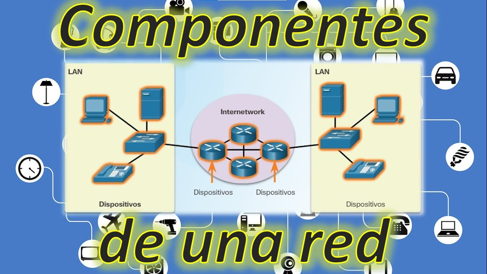
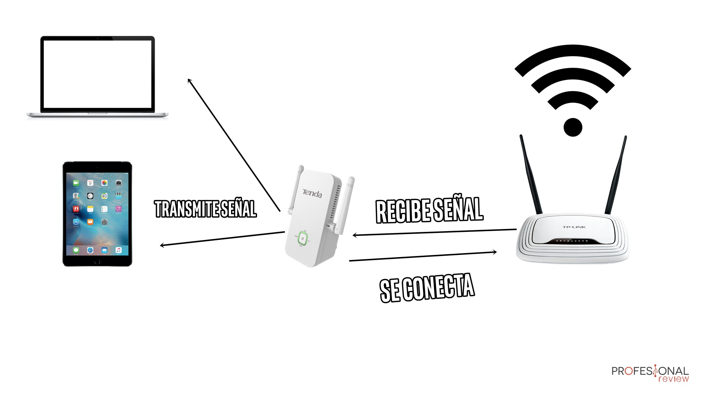
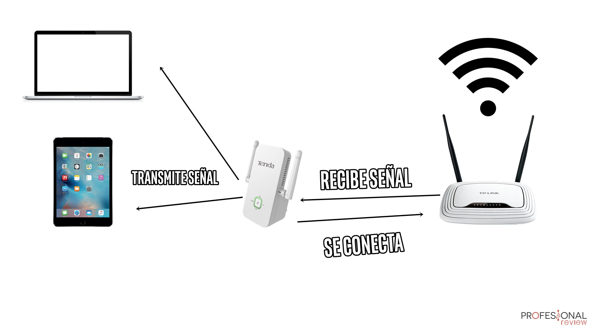
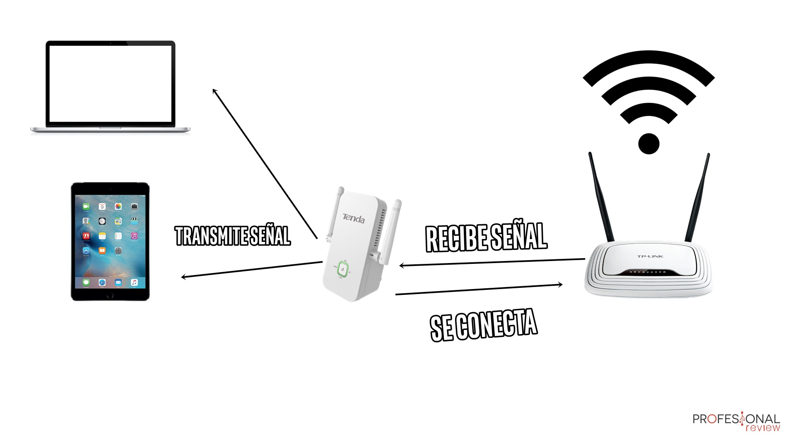

Bienvenido a la Página de Elementos de Red
En esta página encontrarás información sobre los componentes pasivos y activos de una red, con descripciones técnicas y ejemplos.

 


Recreación del laboratorio 6